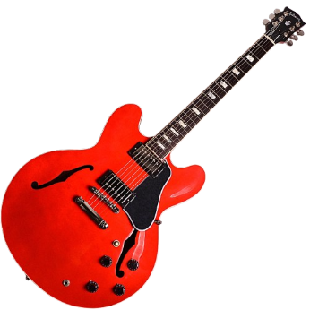
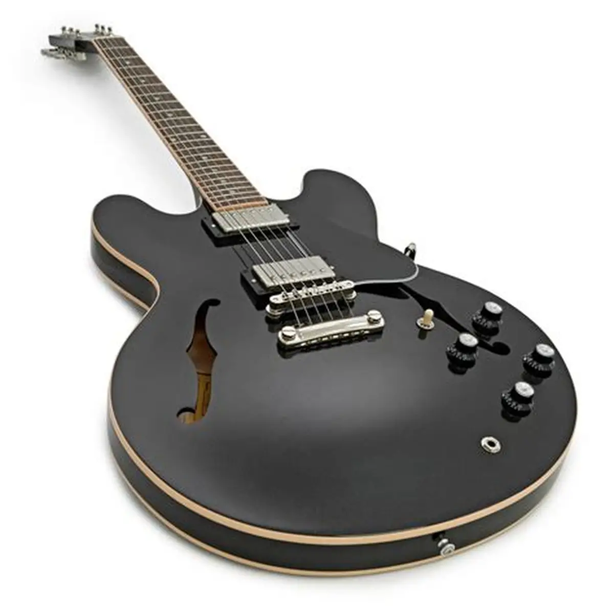
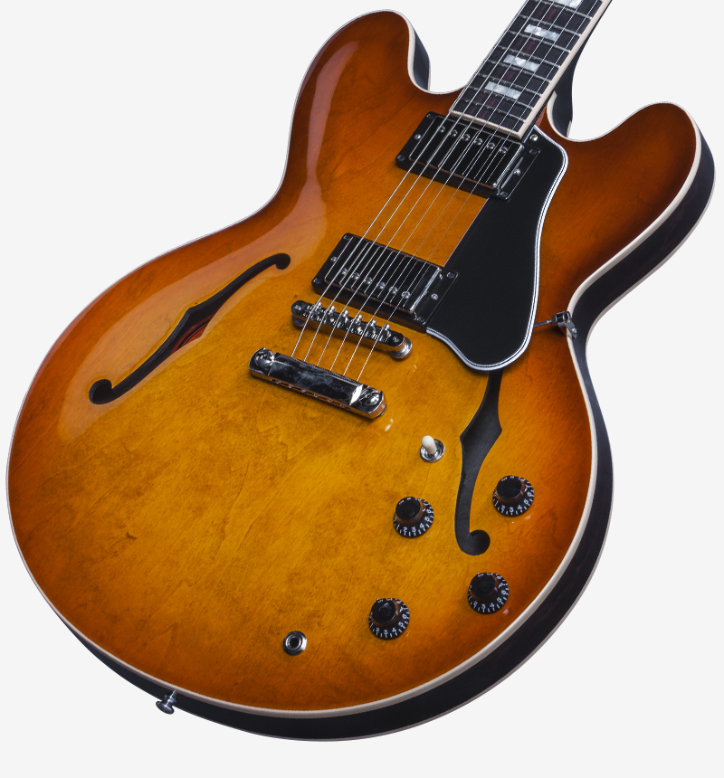
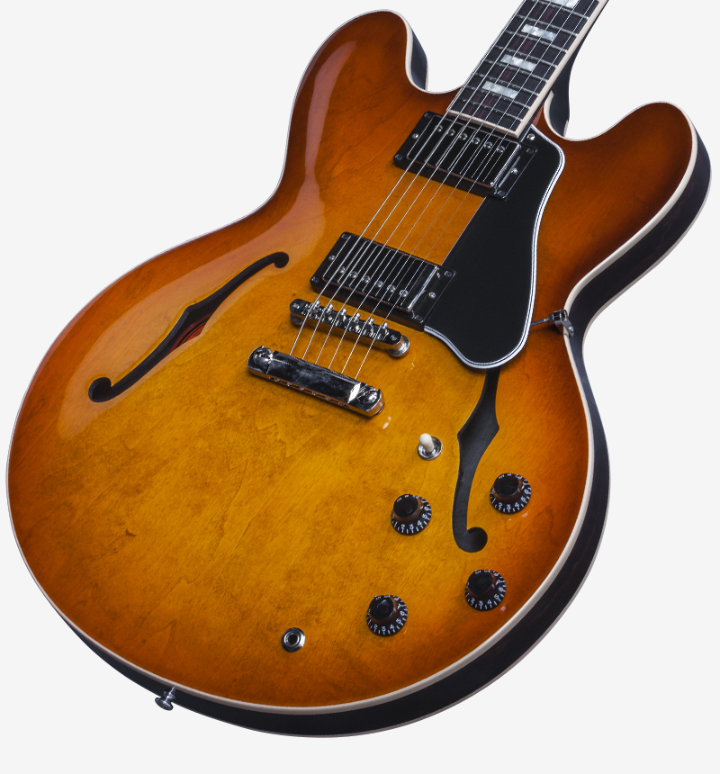
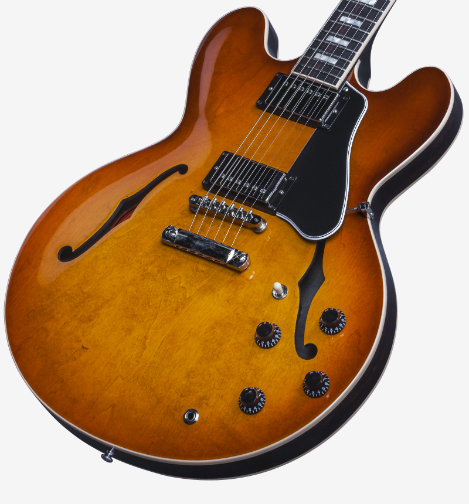

ES-335
The ES-335 delivers a warm, resonant tone with semi-hollow body richness. Perfect for jazz, blues, and rock with a touch of vintage class.


 


Price: $3,500
Key Features
- Semi-hollow body for warm, versatile tone
- Classic maple top with mahogany back and sides
- Dual humbucking pickups for rich sound
- Rosewood fingerboard with 22 frets
- Vintage-style hardware and binding details
Specifications
| Body | Maple Top, Mahogany Back & Sides |
|---|---|
| Neck | Mahogany Set Neck |
| Fingerboard | Rosewood, 22 Medium Frets |
| Pickups | Gibson '57 Classic Humbuckers |
| Controls | 2 Volume, 2 Tone, 3-Way Pickup Selector |
| Bridge | ABR-1 Tune-O-Matic with Stopbar Tailpiece |
| Finish | Vintage Sunburst |
| Weight | Approx. 8.5 lbs |
Shipping & Returns
Free standard shipping within the USA. Expedited shipping options available at checkout. Returns accepted within 30 days of delivery. Item must be in original condition and packaging.
Customer Reviews
★★★★★ "Timeless tone and amazing feel. A true classic!" - Mark D.
★★★★☆ "Perfect guitar for studio and stage use." - Emily T.